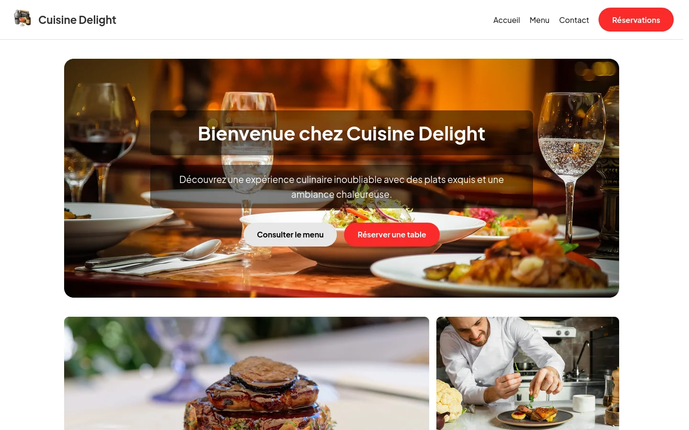
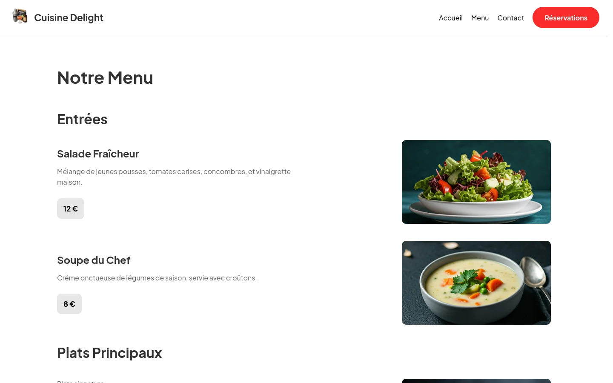
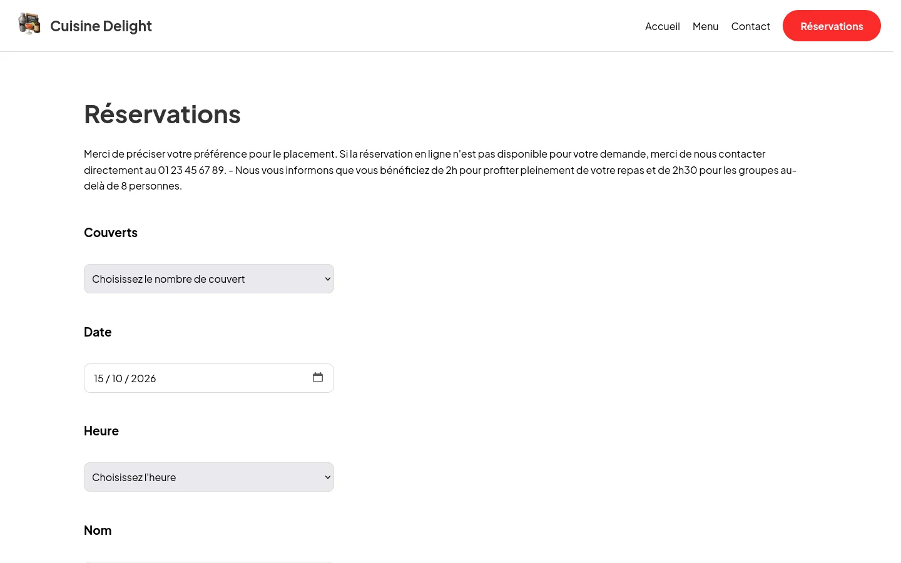
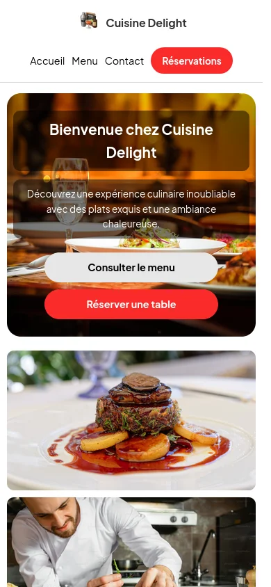

// accueil
Donner envie
Grande photo d'ambiance, deux appels à l'action (la carte, la réservation), grille des plats du chef et avis clients.
Projet personnel · 2025
Le site vitrine d'un restaurant fictif de cuisine française : accueil, carte, contact et réservation en ligne. Écrit en HTML, CSS et JavaScript sans framework, responsive du mobile au grand écran, avec les réservations enregistrées dans Supabase.

Mon deuxième projet personnel, juste après Suivi des dépenses, et un projet d'entraînement : après ma première année de BUT, j'ai voulu consolider le front-end sans m'appuyer sur un framework : mise en page, responsive, formulaires et un peu de JavaScript, le tout écrit à la main.
Un restaurant est un bon sujet : un site vitrine soigné, avec une vraie interaction, la réservation d'une table. Pour l'enregistrer sans écrire de serveur, j'ai découvert Supabase, une base PostgreSQL accessible directement depuis le navigateur.
// accueil
Grande photo d'ambiance, deux appels à l'action (la carte, la réservation), grille des plats du chef et avis clients.
// menu
Entrées, plats, desserts et boissons, chaque plat avec sa photo, sa description et son prix, mis en page en cartes sur mobile.
// réservation
Couverts, date, heure et nom. La réservation est enregistrée dans Supabase avec un identifiant unique, puis on arrive sur une page de confirmation.
// contact
Coordonnées, réseaux sociaux et un formulaire de contact envoyé par email via FormSubmit, sans aucun code serveur.


Le restaurant a besoin d'un peu de temps pour préparer une table. Si l'on réserve pour aujourd'hui, les créneaux passés et ceux de la prochaine heure sont désactivés dans la liste.
Les heures sont stockées sous la forme 19h30 : on les
découpe sur le h et on compare tout en minutes. La liste
est recalculée à chaque changement de date.
function updateAvailableHours() {
const selectedDate = new Date(dateInput.value);
const now = new Date();
const options = heureSelect.querySelectorAll('option:not([disabled][hidden])');
options.forEach(option => {
option.disabled = false;
});
if (selectedDate.toDateString() === now.toDateString()) {
const currentHour = now.getHours();
const currentMinute = now.getMinutes();
options.forEach(option => {
const timeValue = option.value;
const [hours, minutes] = timeValue.split('h').map(part => parseInt(part || 0, 10));
const optionTimeInMinutes = hours * 60 + minutes;
const currentTimeInMinutes = currentHour * 60 + currentMinute;
if (optionTimeInMinutes <= currentTimeInMinutes + 60) {
option.disabled = true;
}
});
}
}Le client Supabase est importé en module ES depuis un CDN. À l'envoi du formulaire, on empêche le rechargement de la page, on construit un numéro de réservation à partir de la date et de deux nombres aléatoires, puis on insère la ligne.
En cas d'erreur, l'utilisateur est prévenu ; sinon, il est redirigé vers la page de confirmation.
document.getElementById('reservation-form').addEventListener('submit', async (e) => {
e.preventDefault(); // empêche le rechargement
const now = new Date();
const timestamp = String(now.getMonth() + 1).padStart(2, '0') +
String(now.getDate()).padStart(2, '0') +
String(now.getHours()).padStart(2, '0') +
String(now.getMinutes()).padStart(2, '0') +
String(now.getSeconds()).padStart(2, '0');
const random1 = Math.floor(Math.random() * 90) + 10;
const random2 = Math.floor(Math.random() * 90) + 10;
const table_id = `${timestamp}-${random1}${random2}`;
const couverts = document.getElementById('nombre-couvert').value;
const date = document.getElementById('date-reservation').value;
const heure = document.getElementById('heure-reservation').value;
const nom = document.getElementById('nom').value;
document.getElementById('table_id').value = table_id;
const { data, error } = await supabase
.from('reservations')
.insert([{ couverts, date, heure, nom, table_id }]);
if (error) {
alert("Erreur lors de la réservation : " + error.message);
} else {
window.location.href = "merci_2.html";
}
});Une seule feuille de style, avec quatre paliers (1024, 768, 480 et 360 px) : la grille de photos passe sur une colonne, la carte se transforme en cartes empilées et les boutons prennent toute la largeur.
Même seul sur le projet, j'ai travaillé sur une branche dev
et fusionné par pull requests (24 au total) : chaque fusion sur la branche
principale déclenche le déploiement sur Netlify.
Une fonctionnalité ou une page à la fois
Une pull request par étape terminée
Sur la branche principale
Déploiement automatique du site statique

01
Sans framework, chaque mise en page se construit : flexbox, grilles, media queries. C'est ce qui m'a rendu à l'aise pour écrire le CSS de ce portfolio.
02
Supabase permet d'écrire en base depuis le navigateur. Cela oblige à penser à ce que la clé publique autorise : c'est la sécurité au niveau des lignes de la base qui protège les données, pas le code JavaScript.
03
Branche de développement, pull requests et déploiement automatique : les mêmes habitudes que sur un projet d'équipe, prises dès un petit projet.